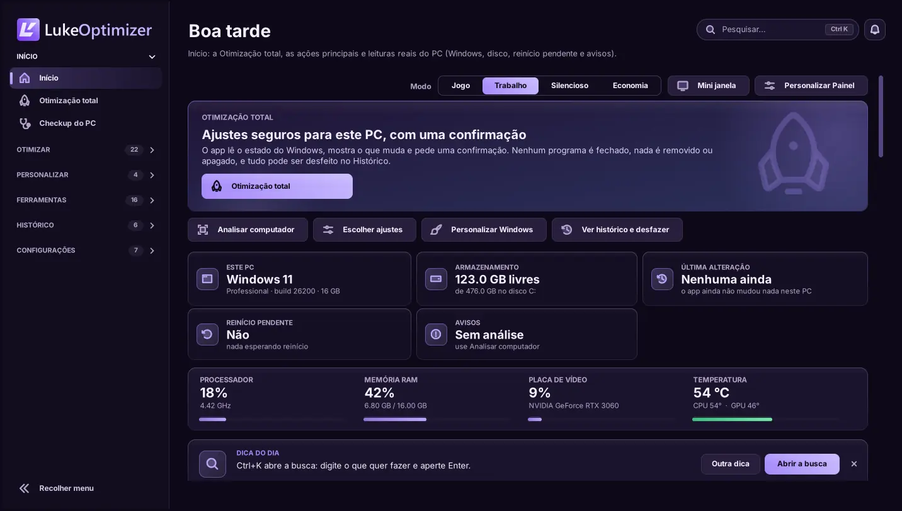

01 / OTIMIZAÇÃO TOTAL
Um clique.
Uma confirmação.
A Otimização total lê o estado do Windows, mostra os ajustes seguros que faltam, confere cada um depois de aplicar e desfaz tudo num clique.
PERSONALIDADE. CLAREZA. CONTROLE.
Conheça cada detalhe do seu PC, prepare seus jogos e cuide do Windows. Grátis, sem conta e sem chave: baixou, abriu, usou.
Windows 10 / 11 · 64 bits · Grátis
O LUKEOPTIMIZER, POR DENTRO
Explore a interface, descubra as ferramentas e acompanhe cada etapa. O controle continua nas suas mãos.

O Início: a Otimização total, as ações principais e as leituras do PC.
Dados de demonstraçãoTelas da versão 9.0 com dados de demonstração, geradas a partir do código do app fora do Windows: no seu PC, fontes e detalhes podem variar um pouco. Recursos e sensores dependem do computador.
FERRAMENTAS COM PROPÓSITO
Leituras, diagnósticos e ajustes no mesmo lugar. Encontre a ferramenta certa para o seu próximo passo.
A Otimização total lê o estado do Windows, mostra os ajustes seguros que faltam, confere cada um depois de aplicar e desfaz tudo num clique.
Perfis por jogo, preparação do Windows e métricas para acompanhar suas partidas.
CS2: perfis e autoexec, com backup antes das alterações.
Processador, memória, placa de vídeo e os sensores disponíveis. Seu hardware em perspectiva.
Ilustração de monitoramento. Não lê seu computador.Diagnósticos de conexão, ping e comparação de DNS. Mais contexto para cuidar da rede.
Revise o que muda e consulte o histórico dos ajustes reversíveis. Controle também é poder voltar.
Nenhum ganho específico de FPS é prometido. Meça antes e depois com o Benchmark. Limpeza de arquivos não tem desfazer.
DA LEITURA AO RESULTADO
Da primeira leitura ao resultado final, você acompanha o processo. O app informa; a decisão continua sendo sua.
Baixar grátisConfira as informações disponíveis, os avisos e o que pode ser revisado. Analisar não aplica ajustes no Windows.
PENSADO PARA O SEU SETUP
O app reúne as informações. Você escolhe o próximo passo.
GRÁTIS DE VERDADE
Sem cadastro, login, chave, pagamento, período de teste ou limite. Todas as funções liberadas e sem anúncios.
Versão 9.0.0 para Windows 10 e 11 de 64 bits.
Um arquivo .exe · abre sem pedir administrador
Baixar para WindowsSHA256 do arquivo:
O exe ainda não tem assinatura digital de código, então o Windows pode mostrar “O Windows protegeu o computador”. Baixe só deste site e, se quiser, confira o SHA256. Depois, clique em Mais informações → Executar assim mesmo.
O LukeOptimizer foi desenvolvido para Windows 10 e 11 de 64 bits. Recursos e sensores variam conforme o hardware, os drivers e as permissões disponíveis.
Sim. Desde a versão 9.0 o LukeOptimizer é gratuito: sem cadastro, login, chave, pagamento, período de teste ou limite de uso. Todas as funções ficam liberadas e não há anúncios.
Não. O app não tem conta nem login. Suas preferências, o Histórico e os backups ficam no seu computador.
O arquivo ainda não tem assinatura digital de código, e o SmartScreen avisa assim sobre programas que ele ainda não conhece. Baixe só deste site. Para conferir o arquivo, rode no PowerShell Get-FileHash com o caminho do exe baixado e compare com o SHA256 mostrado em Baixar. Depois, clique em Mais informações → Executar assim mesmo.
Não há conta, login nem telemetria. Para saber se existe versão nova, o app lê um aviso público e assinado deste site; dá para desligar isso em Configurações, e atualizar nunca é obrigatório. Testes de rede e ping só rodam quando você pede.
Os ajustes reversíveis podem ser consultados no Histórico e desfeitos quando as condições permitem; a Otimização total desfaz tudo num clique. Limpeza e exclusão de arquivos não têm desfazer. Revise antes de aplicar.
Não existe um ganho igual para todos os computadores. O resultado depende do hardware, dos jogos e do estado do Windows. Use as medições e o Benchmark para comparar antes e depois.
Baixe a 9.0 aqui e abra: ela não pede chave nem conta e continua com suas preferências, o Histórico e os backups. Se a 8.x estava instalada em Arquivos de Programas, use Configurações → Atualizar instalação.
LUKEOPTIMIZER 9.0
Grátis, sem conta e sem chave. Baixe, abra e veja o que dá para ajustar no seu PC, com desfazer no Histórico.
Windows 10 e 11 · 64 bits · grátis